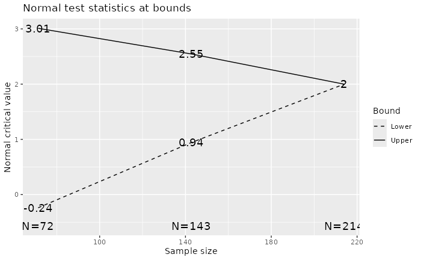

Introduction
gsDesign is a package for deriving and describing group sequential designs. The package allows particular flexibility for designs with alpha- and beta-spending. Many plots are available for describing design properties.
The gsDesign package supports group sequential clinical trial design. While there is a strong focus on designs using - and -spending functions, Wang-Tsiatis designs, including O’Brien-Fleming and Pocock designs, are also available. The ability to design with non-binding futility rules allows control of Type I error in a manner acceptable to regulatory authorities when futility bounds are employed.
The routines are designed to provide simple access to commonly used
designs using default arguments. Standard, published spending functions
are supported as well as the ability to write custom spending functions.
A gsDesign class is defined and returned by the
gsDesign() function. A plot function for this class
provides a wide variety of plots: boundaries, power, estimated treatment
effect at boundaries, conditional power at boundaries, spending function
plots, expected sample size plot, and B-values at boundaries. Using
function calls to access the package routines provides a powerful
capability to derive designs or output formatting that could not be
anticipated through a GUI interface. This enables the user to easily
create designs with features they desire, such as designs with minimum
expected sample size.
Thus, the intent of the gsDesign package is to easily create, fully characterize and even optimize routine group sequential trial designs as well as provide a tool to evaluate innovative designs.
Example
Here is a minimal example assuming a fixed design (no interim) trial with the same endpoint requires 200 subjects for 90% power at = 0.025, one-sided:

gsBoundSummary(x)
#> Analysis Value Efficacy Futility
#> IA 1: 33% Z 3.0107 -0.2387
#> N: 72 p (1-sided) 0.0013 0.5943
#> ~delta at bound 1.5553 -0.1233
#> P(Cross) if delta=0 0.0013 0.4057
#> P(Cross) if delta=1 0.1412 0.0148
#> IA 2: 67% Z 2.5465 0.9411
#> N: 143 p (1-sided) 0.0054 0.1733
#> ~delta at bound 0.9302 0.3438
#> P(Cross) if delta=0 0.0062 0.8347
#> P(Cross) if delta=1 0.5815 0.0437
#> Final Z 1.9992 1.9992
#> N: 214 p (1-sided) 0.0228 0.0228
#> ~delta at bound 0.5963 0.5963
#> P(Cross) if delta=0 0.0233 0.9767
#> P(Cross) if delta=1 0.9000 0.1000